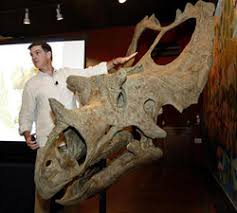

Speaker of the Month
Fossil Threads in the Web of Life
February
Scott Sampson
What's 75 million years old and brand spanking new? A teenage Utahceratops! Come to the Saroyan, armed with your best dinosaur roar, when Scott Sampson, Research Curator at the Utah Museum of Natural History, steps to the podium. Sampson's research has focused on the ecology of dinosaurs and he has conducted fieldwork in a number of countries in Africa.